Bottle Cap
Brand identity & website redesign — designing a distinct digital presence for a Nashville pub.
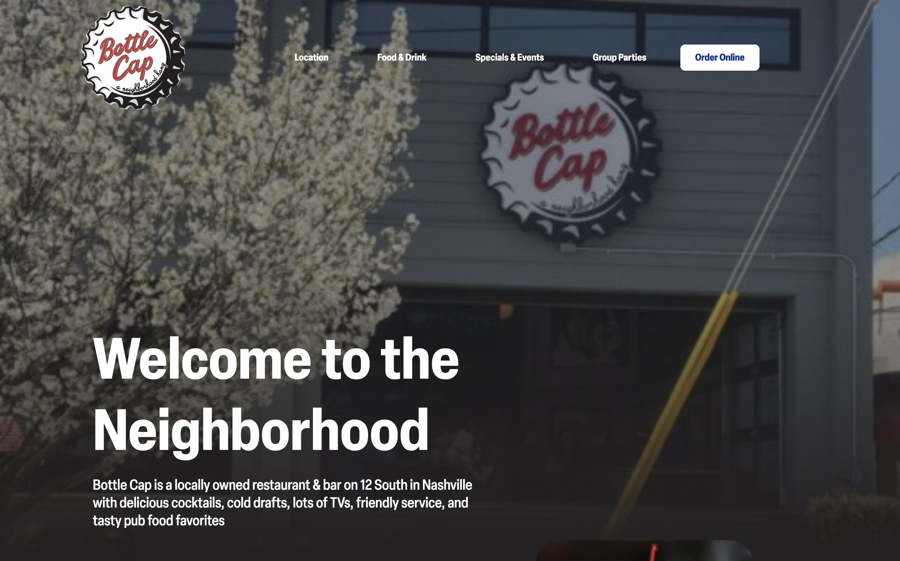
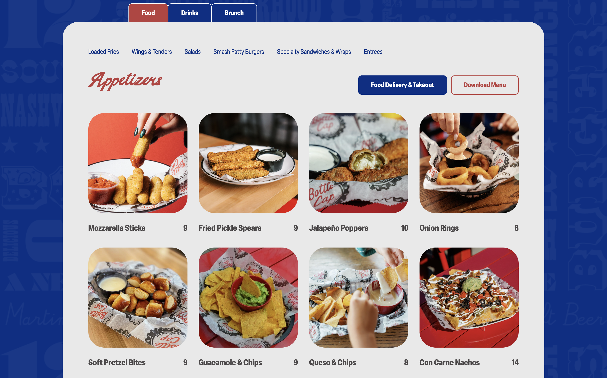
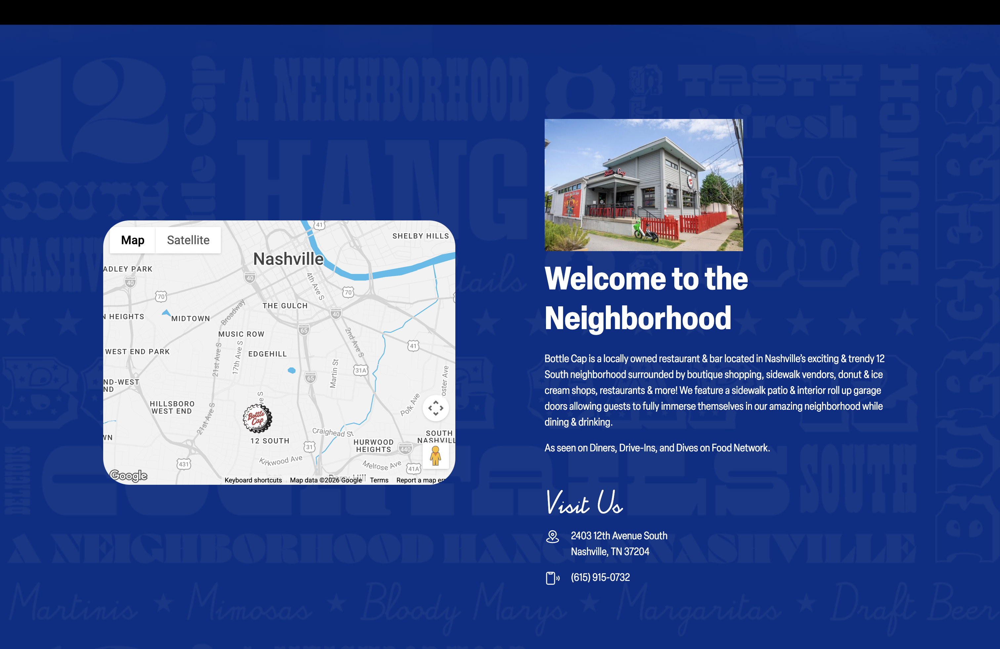
Situation
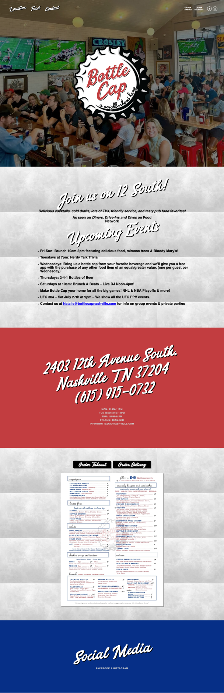
Bottle Cap is a pub in Nashville, TN with an existing web presence that had grown outdated and visually inconsistent over time. The site lacked a cohesive brand identity and delivered a poor user experience — failing to reflect the personality of the venue or meet the expectations of modern guests searching for a bar online.
As a local business competing in a saturated Nashville hospitality market, Bottle Cap's digital presence was actively working against it: the site offered no compelling reason for a first-time visitor to choose them over a competitor. The business needed a complete rethinking of both its brand expression and its website — and needed someone who could own that process from research through final delivery.
Task
I was brought on as a UX Designer responsible for redesigning Bottle Cap's website and establishing a brand identity that felt original, memorable, and true to the pub's character.
The expectation was that I would manage the full design process independently — from discovery and strategy through wireframes, visual design, and handoff — while making sound design decisions without the support of a larger team. The project also required me to work alongside a contractor hired for high-fidelity production, which meant I needed to lead and direct that collaboration clearly.
Action
The project unfolded across three major phases: discovery and research, brand direction and client advocacy, and wireframing and high-fidelity design. Each phase built directly on the last, and each required a distinct set of decisions and skills.
Discovery & Research
At the start of the project, I had a client but no clear picture of what the Bottle Cap brand should be, what was underperforming on the existing site, or what users actually needed from it. Before any design work could begin, I needed to understand the business, its goals, and the competitive environment it operated in.
Establish a clear research foundation — understanding the client's vision, priorities, and pain points, as well as how Bottle Cap fit into the broader Nashville bar and pub landscape.
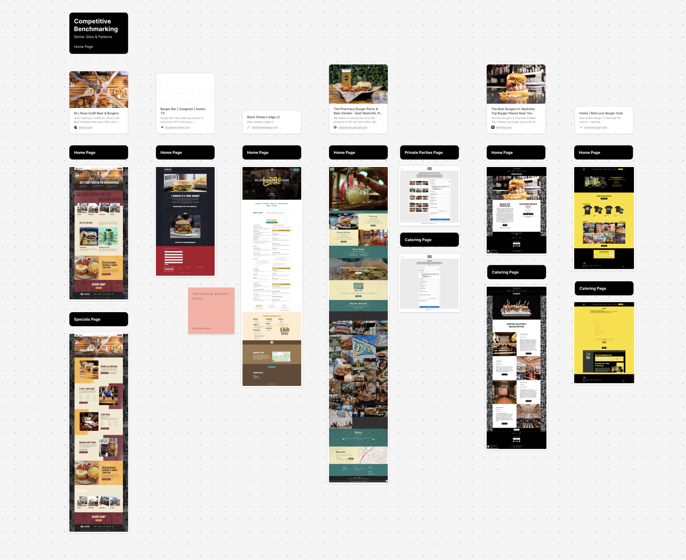
I conducted analysis on the stakeholders' goals with the Bottle Cap team to surface their goals, values, and frustrations with the existing site. In parallel, I ran a competitive analysis of other Nashville bars and pubs — examining their visual systems, site structures, and the aesthetic conventions common across the category.
Discovered that many competing Nashville bars shared similar visual aesthetics — presenting a clear opportunity for Bottle Cap to differentiate. Also surfaced a key tension early: the client was drawn to the look and feel of one competitor in particular, which would need to be addressed directly in the next phase before any brand direction could be set.
Brand Direction & Client Advocacy
The client had expressed a strong preference for replicating the aesthetic of a competing Nashville bar. While understandable — they clearly responded to that bar's energy and visual tone — copying it directly would have undermined Bottle Cap's ability to stand out and build its own identity in the market. This was a critical moment in the project: the design direction, and the client relationship, depended on how I handled it.
Redirect the client toward an original brand direction, without dismissing their instincts or creating friction, and build a visual foundation that was distinctly Bottle Cap's own.
Rather than simply telling the client why copying a competitor was not ideal, I used their insights to reframe the conversation around their own stated goals: standing out in Nashville, building a loyal regular crowd, and feeling authentically local. I then built a set of moodboards presenting alternative brand directions that captured what the client responded to emotionally about the competitor — the mood, warmth, and energy — while expressing it through something original to Bottle Cap.
The client aligned on an original brand direction. The moodboard presentation gave them something tangible to engage with, and grounding the conversation in their own goals made the rationale feel collaborative. This brand direction became the visual and strategic foundation for the entire website redesign.
Wireframing & High-Fidelity Design
With the brand direction approved, it was time to translate that identity into a functional, well-structured website. The original site had clear usability problems — inconsistent navigation, poor content hierarchy, and lack of key information like location, specials, menu, and events. These needed to be solved alongside the visual redesign.
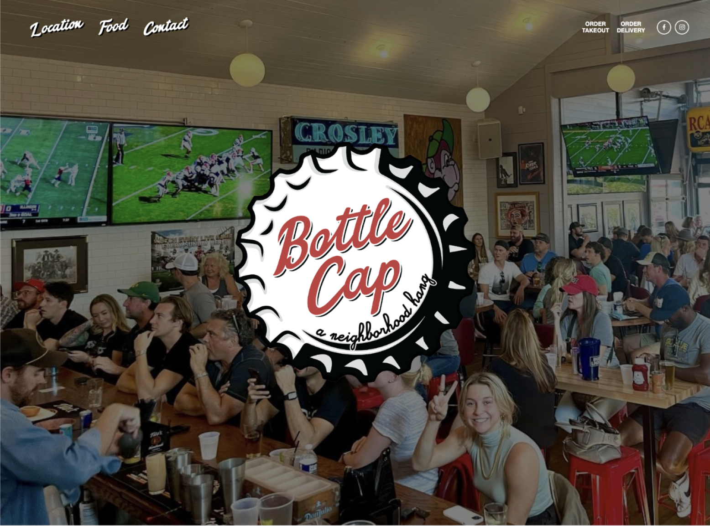
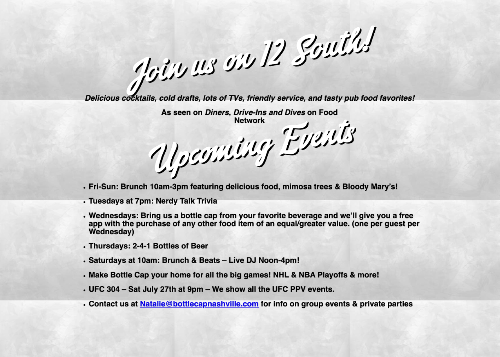
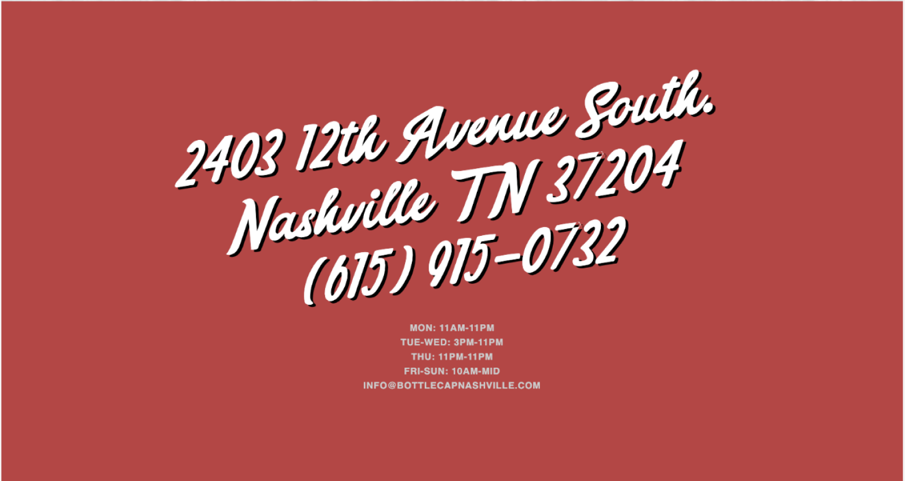
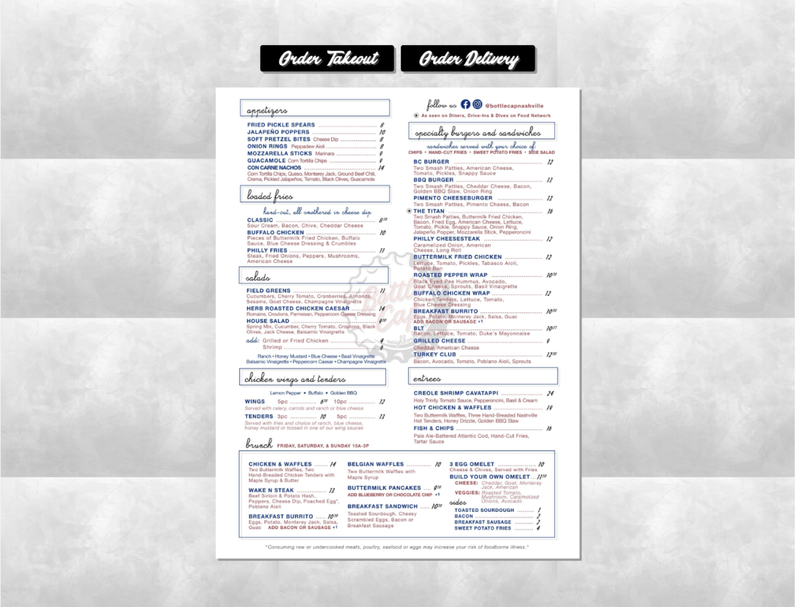
Design wireframes that addressed the structural and usability issues in the original site, then collaborate with the UI contractor to bring the designs to high fidelity in a way that was consistent with the brand system.
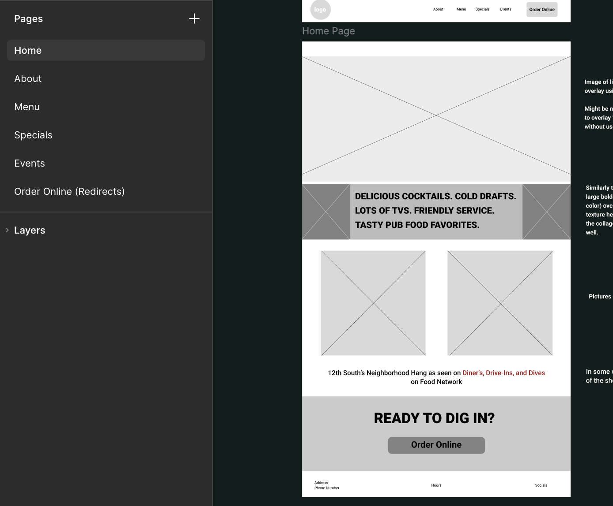
Created wireframes that restructured the site's information architecture — improving navigation clarity, content hierarchy, and the findability of key pages. Once the wireframes were approved, I transitioned into a design-direction role with the contractor: providing detailed guidance on the brand system, reviewing high-fidelity outputs for visual consistency, and iterating on screens until they met the standard established in the brand phase.
A complete, high-fidelity website design ready for development — cohesive in brand, improved in usability, and aligned with the client's expectations. The site accurately represented Bottle Cap's identity and resolved the structural problems that had made the original difficult to navigate.
Result
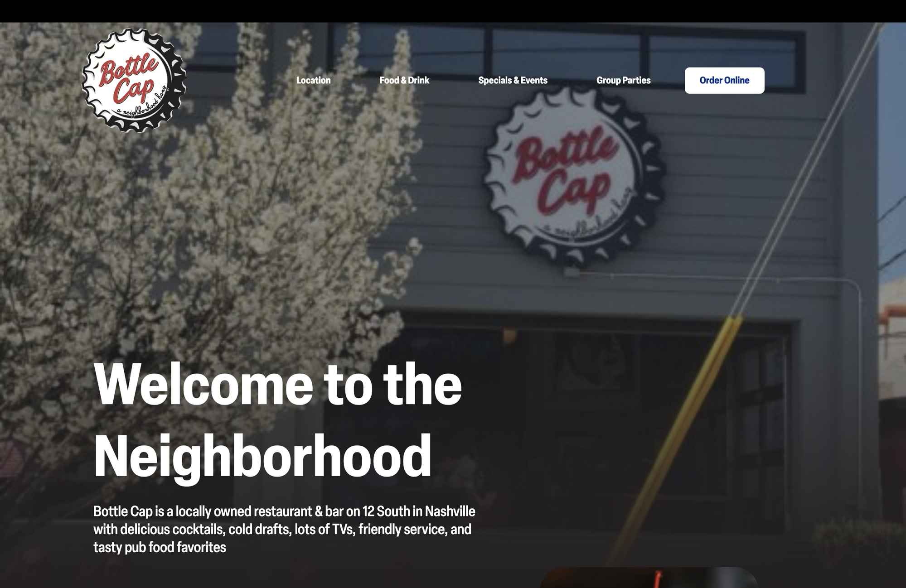
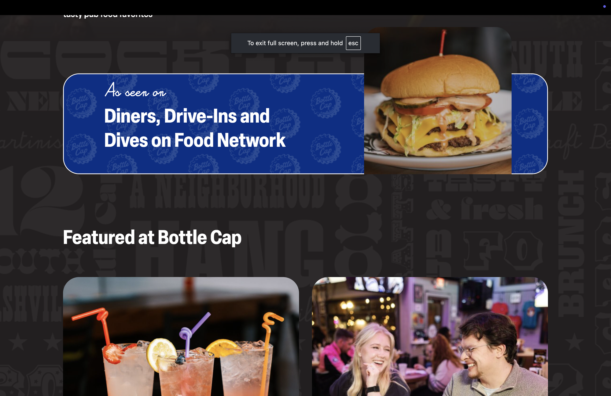
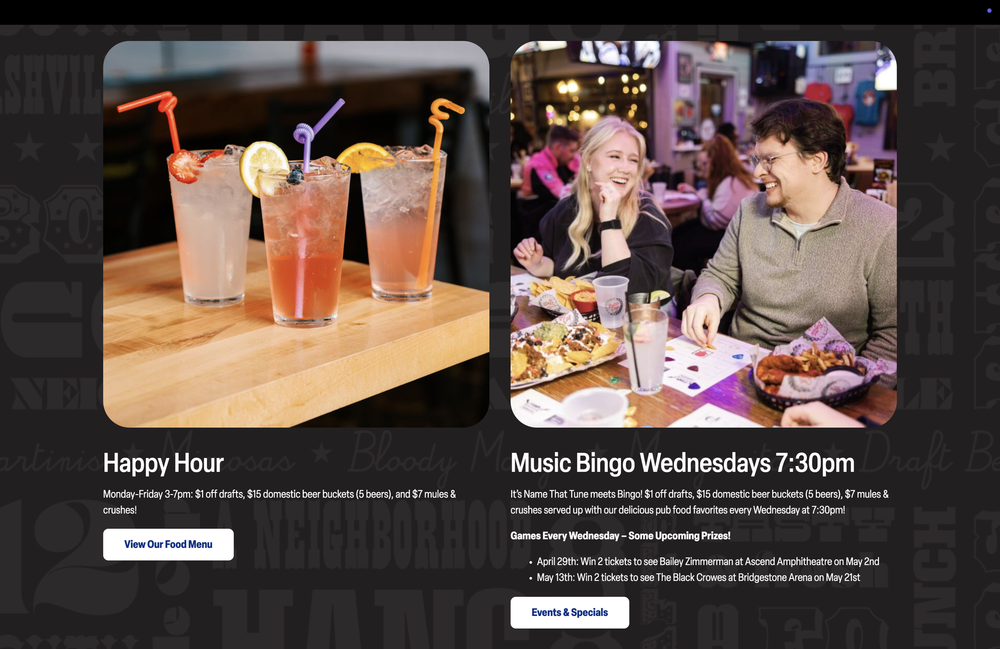
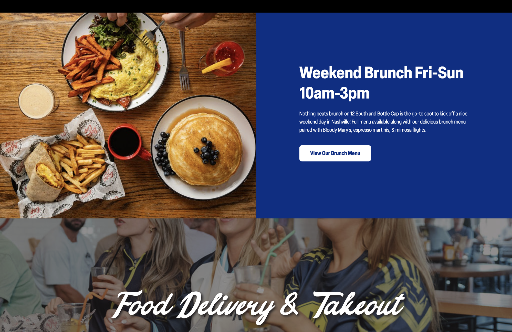
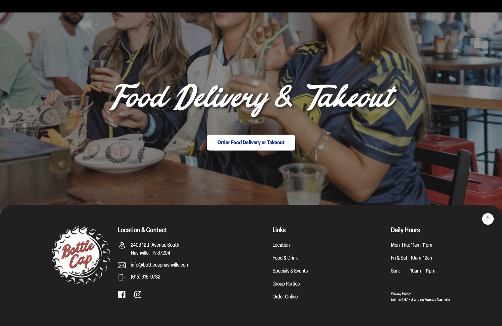
The redesigned Bottle Cap website launched and is currently live. The project delivered a cohesive brand identity and measurably improved website usability and navigation. The client responded with strong satisfaction.
Since launch, the website has seen increased foot traffic with more customers learning about events and specials. The project met its original goals: Bottle Cap now has a distinct, original brand and a website that works.
Reflection
One thing I would approach differently is expanding the research phase to include actual bar patrons. While the stakeholders gave me strong insight into the business's goals, testing with real users earlier in the process would have helped validate the usability decisions in the wireframes before committing to high fidelity.
The experience of redirecting the client on brand direction was one of the most valuable moments of the project — it reinforced that good design advocacy is not about overruling the client, but about helping them get to a better version of what they actually want.